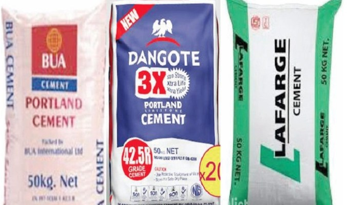

Nigerian cement giants – Dangote Cement, BUA Cement, and Lafarge Africa – posted the highest profit margin among global peers in the first half of 2023, according to data compiled by BusinessDay.
Dangote Cement, BUA Cement, and Lafarge Africa recorded higher earnings before interest, taxes, depreciation, and amortisation (EBITA) margins compared to six other major global cement producers, an analysis of data from the financial statements shows.
Dangote Cement (Nigerian operations) reported an EBITDA margin of 58.8 percent, BUA Group recorded 45.2 percent and Lafarge Africa posted 33.3 percent.
This is significantly higher compared to EBITDA margin of Holcim Group in Switzerland (15.6 percent); Anhui Conch in China (13.9 percent); Heidelberg Cement in China (17.1 percent); Cemex in Mexico (21 percent); Taiwan Cement (21 percent) and Ultra Tech Cement in India (21 percent).
The EBITDA margin, which is calculated as earnings before interest, tax, depreciation and amortisation divided by total revenue, is a good indicator of a company’s financial health as it doesn’t consider the effect of unique decisions and tax laws when assessing the performance of a company.
Further findings showed that the Nigerian cement makers notched higher EBITDA margin despite having lower cement production capacity compared to their global peers.
Dangote Cement has a production capacity of 27.8 million metric tonnes per annum (mmtpa); BUA Cement, 11 million mmtpa; Lafarge Africa Holcim Group, 10.5 mmtpa; Holcim Group, 286.6 mmtpa; Anhui Conch, 217 mmtpa; Heidelberg Cement, 121 mmtpa; Cemex in Mexico, 87.09 mmtpa; Taiwan Cement, 63.72 mmtpa; and Ultra Tech Cement, 132 mmtpa.
Industry analysts have identified immense limestone deposits, tax incentives, rising prices, and rising opportunities from low cement consumption as enablers of high profit margins.
“The general themes in Nigeria’s cement sector include capacity expansion, utilisation, and rising prices. These themes were central to the sector’s double-digit revenue growth,” CardinalStone, an independent multi-asset investment management firm, said in a report.
“Pioneer tax incentives have consistently helped lower effective tax rates across the industry, which has supported strong EPS growth and cascaded to an average dividend payout ratio of 70 percent across industry players,” it added.